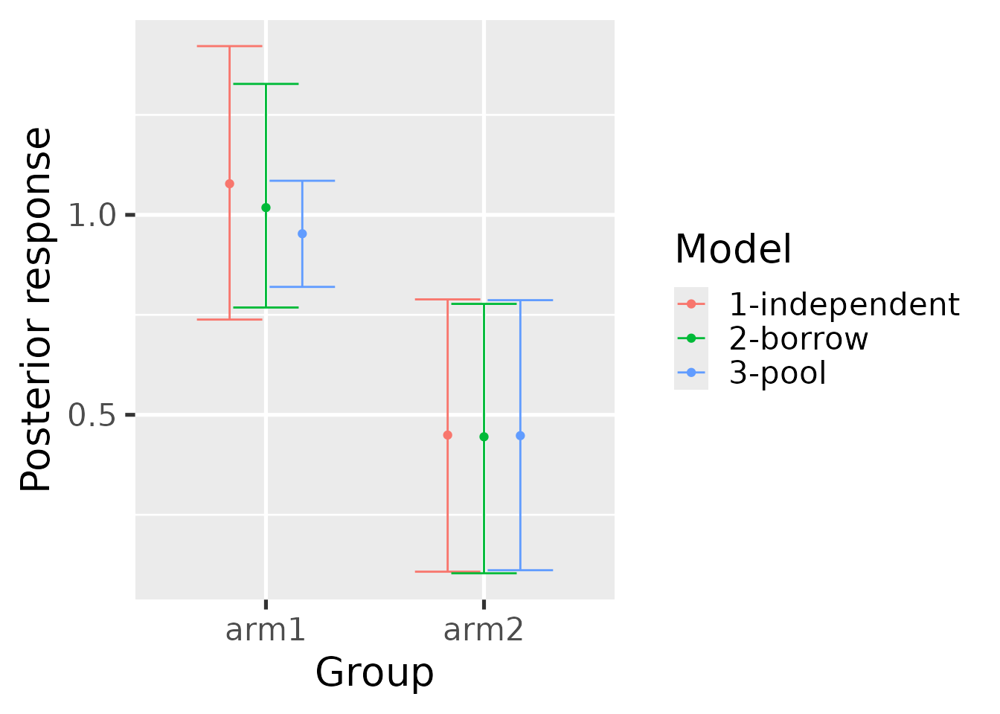
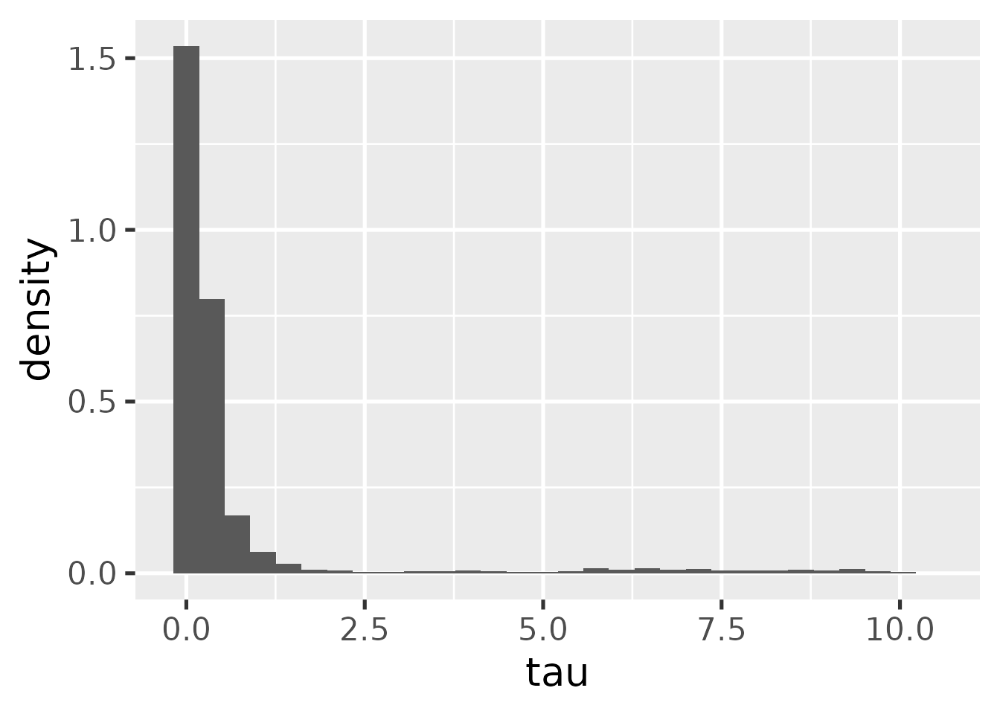

This tutorial shows how to fit historical control-group borrowing
models using the historicalborrow package.
Data
historicalborrow expects data on multiple patients
partitioned into studies and groups. Here is a simulated example. There
are functions to simulate from the prior predictive distribution of each
of the hierarchical, mixture, independent, and pooled models.
library(historicalborrow)
library(dplyr)
set.seed(0)
data <- hb_sim_independent(
n_continuous = 1,
n_study = 3,
n_group = 2,
alpha = rep(1, 3),
delta = 0.5,
sigma = rep(1, 3),
n_patient = 100
)$data %>%
rename(
outcome = response,
trial = study,
arm = group,
subject = patient,
factor1 = covariate_study1_continuous1,
factor2 = covariate_study2_continuous1
) %>%
mutate(
trial = paste0("trial", trial),
arm = paste0("arm", arm),
subject = paste0("subject", subject)
)
data
#> # A tibble: 400 × 7
#> trial arm subject factor1 factor2 covariate_study3_continuous1 outcome
#> <chr> <chr> <chr> <dbl> <dbl> <dbl> <dbl>
#> 1 trial1 arm1 subject1 1.27 0 0 3.31
#> 2 trial1 arm1 subject2 0.415 0 0 3.23
#> 3 trial1 arm1 subject3 -1.54 0 0 -3.08
#> 4 trial1 arm1 subject4 -0.929 0 0 -0.623
#> 5 trial1 arm1 subject5 -0.295 0 0 2.33
#> 6 trial1 arm1 subject6 -0.00577 0 0 1.12
#> 7 trial1 arm1 subject7 2.40 0 0 5.88
#> 8 trial1 arm1 subject8 0.764 0 0 2.69
#> 9 trial1 arm1 subject9 -0.799 0 0 -0.0117
#> 10 trial1 arm1 subject10 -1.15 0 0 0.261
#> # ℹ 390 more rowsYou as the user will choose a reference level of the
study column to indicate which study is the current one
(the other are historical). Likewise, you will choose a level of the
group column to indicate which group is the control group.
To see how historicalborrow assigns numeric indexes to the
study and group levels, use hb_data(). Viewing this output
may assist with interpreting the results later on.
library(dplyr)
standardized_data <- hb_data(
data = data,
response = "outcome",
study = "trial",
study_reference = "trial3",
group = "arm",
group_reference = "arm1",
patient = "subject",
covariates = c("factor1", "factor2")
)
standardized_data
#> # A tibble: 400 × 9
#> response study_label group_label patient_label study group patient
#> <dbl> <chr> <chr> <chr> <int> <int> <int>
#> 1 3.31 trial1 arm1 subject1 1 1 1
#> 2 0.261 trial1 arm1 subject10 1 1 2
#> 3 1.81 trial1 arm1 subject100 1 1 3
#> 4 -1.21 trial1 arm1 subject11 1 1 13
#> 5 0.236 trial1 arm1 subject12 1 1 24
#> 6 1.02 trial1 arm1 subject13 1 1 35
#> 7 2.72 trial1 arm1 subject14 1 1 46
#> 8 0.485 trial1 arm1 subject15 1 1 57
#> 9 1.83 trial1 arm1 subject16 1 1 68
#> 10 0.357 trial1 arm1 subject17 1 1 79
#> # ℹ 390 more rows
#> # ℹ 2 more variables: covariate_factor1 <dbl>, covariate_factor2 <dbl>Models
The pooled and independent models are benchmarks used to quantify the borrowing strength of the hierarchical and mixture models. To run these benchmark models, run the functions below. Each function returns a data frame with one column per parameter and one row per posterior sample.
mcmc_pool <- hb_mcmc_pool(
data = data,
response = "outcome",
study = "trial",
study_reference = "trial3",
group = "arm",
group_reference = "arm1",
patient = "subject",
# Can be continuous, categorical, or binary columns:
covariates = c("factor1", "factor2"),
# Raise these arguments for serious analyses:
n_chains = 4,
n_adapt = 2e3,
n_warmup = 2e3,
n_iterations = 4e3
)
mcmc_pool
#> # A tibble: 16,000 × 10
#> alpha `beta[1]` `beta[2]` delta `sigma[1]` `sigma[2]` `sigma[3]` .chain
#> <dbl> <dbl> <dbl> <dbl> <dbl> <dbl> <dbl> <int>
#> 1 0.951 1.31 -0.174 0.313 1.07 1.02 1.66 1
#> 2 0.822 1.41 -0.0920 0.0491 1.09 0.895 1.72 1
#> 3 0.908 1.33 -0.216 0.345 1.05 0.934 1.72 1
#> 4 0.956 1.43 -0.118 0.229 1.00 0.944 1.72 1
#> 5 0.977 1.20 -0.170 0.572 1.06 0.996 1.70 1
#> 6 0.983 1.42 -0.0678 0.230 1.06 1.06 1.71 1
#> 7 1.02 1.38 0.0449 0.141 1.14 1.03 1.94 1
#> 8 0.909 1.34 0.00974 0.833 1.11 1.06 1.78 1
#> 9 0.817 1.30 -0.0706 0.275 1.40 0.967 1.78 1
#> 10 1.03 1.42 -0.288 0.162 1.33 0.927 1.75 1
#> # ℹ 15,990 more rows
#> # ℹ 2 more variables: .iteration <int>, .draw <int>
mcmc_independent <- hb_mcmc_independent(
data = data,
response = "outcome",
study = "trial",
study_reference = "trial3",
group = "arm",
group_reference = "arm1",
patient = "subject",
# Can be continuous, categorical, or binary columns:
covariates = c("factor1", "factor2"),
# Raise these arguments for serious analyses:
n_chains = 4,
n_adapt = 2e3,
n_warmup = 2e3,
n_iterations = 4e3
)The hierarchical model works best if the number of historical studies
is large. For a small number of historical studies, it may be necessary
to choose a value of s_tau to approximate the prior amount
of borrowing given a desired precision ratio and supposed residual
variance. See the function hb_s_tau() for an initial value
to explore. It is not recommended to entirely rely on
hb_s_tau(), but it does give a benchmark to aid in the
thinking.
mcmc_hierarchical <- hb_mcmc_hierarchical(
data = data,
response = "outcome",
study = "trial",
study_reference = "trial3",
group = "arm",
group_reference = "arm1",
patient = "subject",
# Can be continuous, categorical, or binary columns:
covariates = c("factor1", "factor2"),
# Raise these arguments for serious analyses:
n_chains = 4,
n_adapt = 2e3,
n_warmup = 2e3,
n_iterations = 4e3
)For the mixture model, it is first necessary to use the simple model to get prior mixture components.
hyperparameters <- hb_mcmc_mixture_hyperparameters(
data = data,
response = "outcome",
study = "trial",
study_reference = "trial3",
group = "arm",
group_reference = "arm1",
patient = "subject"
)
hyperparameters
#> # A tibble: 3 × 4
#> study study_index m_omega s_omega
#> <chr> <int> <dbl> <dbl>
#> 1 trial1 1 0.982 0.177
#> 2 trial2 2 0.892 0.0975
#> 3 trial3 3 0 30Then, using just the data from the current study, run the mixture model with the hyperparameters above.
data_mixture <- dplyr::filter(data, trial == "trial3")
mcmc_mixture <- hb_mcmc_mixture(
data = data_mixture, # only analyze current study
response = "outcome",
study = "trial",
study_reference = "trial3",
group = "arm",
group_reference = "arm1",
patient = "subject",
# Can be continuous, categorical, or binary columns:
covariates = c("factor1", "factor2"),
# Prior mixture components:
m_omega = hyperparameters$m_omega,
s_omega = hyperparameters$s_omega,
p_omega = rep(1 / nrow(hyperparameters), nrow(hyperparameters)),
# Raise these arguments for serious analyses:
n_chains = 4,
n_adapt = 2e3,
n_warmup = 2e3,
n_iterations = 4e3
)Convergence
It is important to check convergence diagnostics on each model. The
hb_convergence() function returns data frame of summarized
convergence diagnostics. max_rhat is the maximum univariate
Gelman/Rubin potential scale reduction factor over all the parameters of
the model, min_ess_bulk is the minimum bulk effective
sample size over the parameters, and min_ess_tail is the
minimum tail effective sample size. max_rhat should be
below 1.01, and the ESS metrics should both be above 100 times the
number of MCMC chains. If any of these conditions are not true, the MCMC
did not converge, and it is recommended to try running the model for
more saved iterations (and if max_rhat is high, possibly
more warmup iterations).
hb_convergence(mcmc_hierarchical)
#> # A tibble: 1 × 3
#> max_rhat min_ess_bulk min_ess_tail
#> <dbl> <dbl> <dbl>
#> 1 1.07 42.9 11.5Results
Each model can be summarized with the hb_summary()
function. The output is a table with few rows and many columns.
summary_hierarchical <- hb_summary(
mcmc = mcmc_hierarchical,
data = data,
response = "outcome",
study = "trial",
study_reference = "trial3",
group = "arm",
group_reference = "arm1",
patient = "subject",
covariates = c("factor1", "factor2"),
eoi = c(0, 1),
direction = c(">", "<")
)
summary_hierarchical
#> # A tibble: 2 × 40
#> group group_label data_n data_N data_n_study_1 data_n_study_2 data_n_study_3
#> <dbl> <chr> <int> <int> <int> <int> <int>
#> 1 1 arm1 300 300 100 100 100
#> 2 2 arm2 100 100 0 0 100
#> # ℹ 33 more variables: data_N_study_1 <int>, data_N_study_2 <int>,
#> # data_N_study_3 <int>, data_mean <dbl>, data_sd <dbl>, data_lower <dbl>,
#> # data_upper <dbl>, response_mean <dbl>, response_variance <dbl>,
#> # response_sd <dbl>, response_lower <dbl>, response_upper <dbl>,
#> # response_mean_mcse <dbl>, response_sd_mcse <dbl>,
#> # response_lower_mcse <dbl>, response_upper_mcse <dbl>, diff_mean <dbl>,
#> # diff_lower <dbl>, diff_upper <dbl>, diff_mean_mcse <dbl>, …hb_summary() returns a tidy data frame with one row per
group (e.g. treatment arm) and the columns in the following list. Unless
otherwise specified, the quantities are calculated at the group level.
Some are calculated for the current (non-historical) study only, while
others pertain to the combined dataset which includes all historical
studies. The mixture model is an exception because the data
argument only includes the current study, so other quantities that
include historical information will need to borrow from an
hb_summary() call on one of the other models.
-
group: group label. -
data_mean: observed mean response specific to the current study. -
data_sd: observed standard deviation of the response specific to the current study. -
data_lower: lower bound of a simple frequentist 95% confidence interval of the observed mean specific to the current study. -
data_upper: upper bound of a simple frequentist 95% confidence interval of the observed mean specific to the current study. -
data_n: number of non-missing observations in the combined dataset with all studies. -
data_N: total number of observations (missing and non-missing) in the combined dataset with all studies. -
data_n_study_*: number of non-missing observations separately for each study. The suffixes of these column names are integer study indexes. Calldplyr::distinct(hb_data(your_data), study, study_label)to see which study labels correspond to these integer indexes. Note: the combined dataset for the mixture model is just the current study. If all thedata_n_study_*results across all studies are desired, then callhb_summary()on a different model (e.g. pooled). -
data_N_study_*: same asdata_n_study_*except both missing and non-missing observations are counted (total number of observations). -
response_mean: Estimated posterior mean of the response from the model specific to the current study. Typically, the raw response is change from baseline, in which caseresponse_meanis estimating change from baseline. -
response_sd: Estimated posterior standard deviation of the mean response from the model specific to the current study. -
response_variance: Estimated posterior variance of the mean response from the model specific to the current study. -
response_lower: Lower bound of a 95% posterior interval on the mean response from the model specific to the current study. -
response_upper: Upper bound of a 95% posterior interval on the mean response from the model specific to the current study. -
response_mean_mcse: Monte Carlo standard error ofresponse_mean. -
response_sd_mcse: Monte Carlo standard error ofresponse_sd. -
response_lower_mcse: Monte Carlo standard error ofresponse_lower. -
response_upper_mcse: Monte Carlo standard error ofresponse_upper. -
diff_mean: Estimated treatment effect from the model specific to the current study. -
diff_lower: Lower bound of a 95% posterior interval on the treatment effect from the model specific to the current study. -
diff_upper: Upper bound of a 95% posterior interval on the treatment effect from the model specific to the current study.. -
diff_mean_mcse: Monte Carlo standard error ofdiff_mean. -
diff_lower_mcse: Monte Carlo standard error ofdiff_lower. -
diff_upper_mcse: Monte Carlo standard error ofdiff_upper. -
P(diff > EOI),P(diff < EOI): CSF probabilities on the treatment effect specified with theeoianddirectionarguments. Specific to the current study. -
effect_mean: Estimated posterior mean of effect size (treatment difference divided by residual standard deviation). Specific to the current study. -
effect_lower: Lower bound of a 95% posterior interval of effect size from the model. Specific to the current study. -
effect_upper: Upper bound of a 95% posterior interval of effect size from the model. Specific to the current study. -
precision_ratio: For the hierarchical model only, a model-based mean of the precision ratio. Specific to the current study. -
precision_ratio_lower: For the hierarchical model only, lower bound of a model-based 95% posterior interval of the precision ratio. Specific to the current study. -
precision_ratio_upper: For the hierarchical model only, upper bound of a model-based 95% posterior interval of the precision ratio. Specific to the current study. -
mix_prop_*: For the mixture model only, posterior mixture proportions of each of the mixture components. The last one is for the current study and the first ones are for the historical studies. The suffixes of these column names are the integer study indexes. Calldplyr::distinct(hb_data(your_data), study, study_label)to see which study labels correspond to these integer indexes.
Borrowing metrics
The hb_ess() metric computes the effective sample size
metric described at https://wlandau.github.io/historicalborrow/articles/methods.html#effective-sample-size-ess.
hb_ess(
mcmc_pool = mcmc_pool,
mcmc_hierarchical = mcmc_hierarchical,
data = data,
response = "outcome",
study = "trial",
study_reference = "trial3",
group = "arm",
group_reference = "arm1",
patient = "subject"
)
#> # A tibble: 1 × 5
#> ess weight n v0 v_tau
#> <dbl> <dbl> <int> <dbl> <dbl>
#> 1 22.6 0.113 200 0.451 3.99The hb_metrics() function shows legacy/superseded
borrowing metrics like the mean shift ratio and variance shift ratio
which require input from benchmark models. The metrics in
hb_ess() are preferred over those in
hb_metrics(), but here is a demonstration of
hb_metrics() below:
summary_pool <- hb_summary(
mcmc = mcmc_pool,
data = data,
response = "outcome",
study = "trial",
study_reference = "trial3",
group = "arm",
group_reference = "arm1",
patient = "subject",
covariates = c("factor1", "factor2")
)
summary_independent <- hb_summary(
mcmc = mcmc_independent,
data = data,
response = "outcome",
study = "trial",
study_reference = "trial3",
group = "arm",
group_reference = "arm1",
patient = "subject",
covariates = c("factor1", "factor2")
)
hb_metrics(
borrow = summary_hierarchical,
pool = summary_pool,
independent = summary_independent
)
#> # A tibble: 1 × 2
#> mean_shift_ratio variance_shift_ratio
#> <dbl> <dbl>
#> 1 0.477 0.418Usage with the mixture model is the same.
summary_mixture <- hb_summary(
mcmc = mcmc_mixture,
data = data_mixture,
response = "outcome",
study = "trial",
study_reference = "trial3",
group = "arm",
group_reference = "arm1",
patient = "subject",
covariates = c("factor1", "factor2")
)
hb_metrics(
borrow = summary_mixture,
pool = summary_pool,
independent = summary_independent
)
#> # A tibble: 1 × 2
#> mean_shift_ratio variance_shift_ratio
#> <dbl> <dbl>
#> 1 0.726 0.631Plots
The hb_plot_borrow() function visualizes the results
from a borrowing model (either hierarchical or mixture) against the
benchmark models (independent and pooled) to gain intuition about the
overall effect of borrowing on estimation.
hb_plot_borrow(
borrow = summary_hierarchical,
pool = summary_pool,
independent = summary_independent
)
hb_plot_borrow(
borrow = summary_mixture,
pool = summary_pool,
independent = summary_independent
)hb_plot_group() shows the same information but grouped
by the group designations in the data (e.g. treatment arm).
hb_plot_group(
borrow = summary_mixture,
pool = summary_pool,
independent = summary_independent
)
For the hierarchical model, we can plot the marginal posterior of the
tau parameter. This should be compared with the prior in
practice to understand the influence of prior and data on the
posterior.
hb_plot_tau(mcmc_hierarchical)